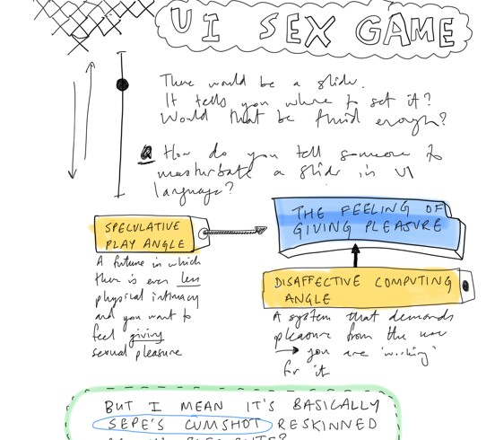
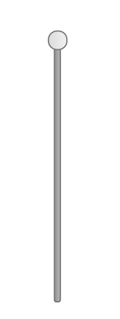
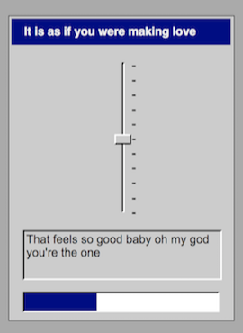
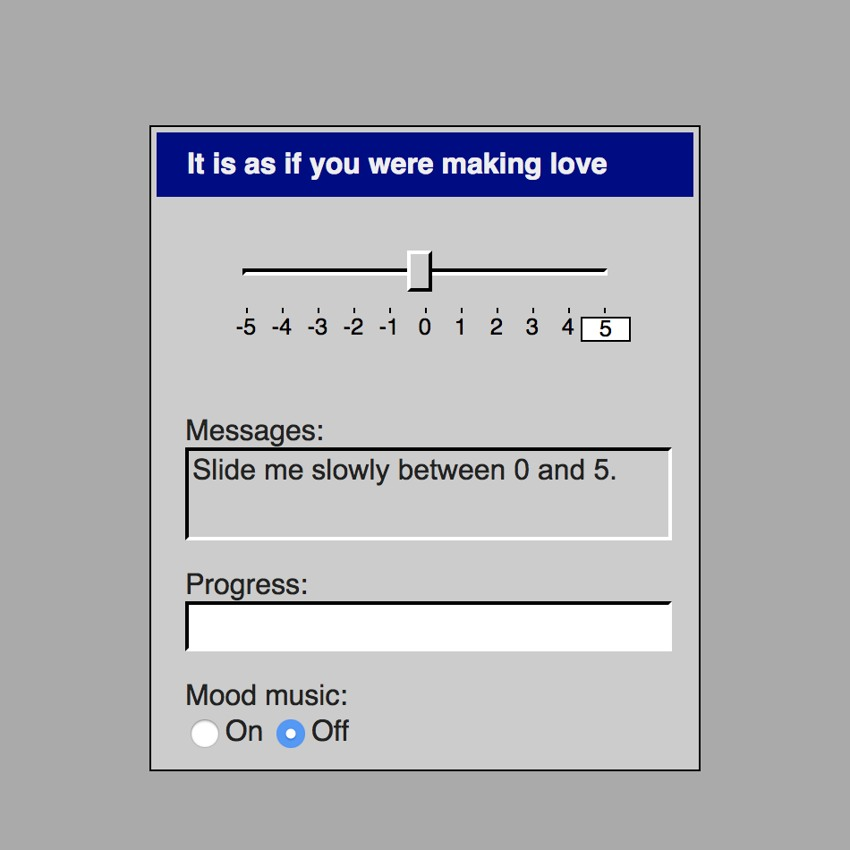

Les mouvements des mains devant la caméra permettent de placer des cubes et de faire pivoter la construction.
Chaque lettre oscille comme un lustre lorsqu’on fait glisser l’un de ses cristaux avec la souris.
La webcam capte les yeux et la bouche pour former un « S » qui reproduit leurs mouvements.
Secouer le téléphone fait apparaître l’image suivante.
Le clip donne des consignes à suivre avec la souris et superpose les mouvements du curseur à ceux des autres participants.
« Prototyper avec la matière peut aider à comprendre les contraintes, à révéler les propriétés de cette technologie émergente et à guider la conception. »
« Dans certains projets de design, on ne peut formuler d’intention précise à l’avance. Il arrive qu’on ne la reconnaisse qu’une fois réalisée. »
Pour Donald Schön, la réflexion dans l’action se produit pendant le travail. Un résultat nous surprend, nous fait revoir notre idée et oriente le geste suivant. Le prototype final montre rarement ce moment.
La Method for Design Materialization (MDM) est issue de la recherche en design de jeux à l’Université Concordia. Elle relie les versions successives d’un prototype aux décisions prises en cours de création.
Dans l’atelier, un commit conserve l’essai et son message précise pourquoi on le garde. En fin de séance, le journal permet de revenir sur ce qui a changé dans notre intention.

Dans It is as if you were making love, on fait des allers-retours avec une poignée. Comment sentir que le geste procure du plaisir à la machine ? Barr imagine d’abord que la poignée pourrait vibrer ou pulser.
Le 6 mai, il donne au prototype l’apparence de Windows 95. La poignée avance désormais par crans. Le choix de Windows lui suggère une autre façon d’exprimer le plaisir. Le logiciel pourrait afficher une barre de progression, comme pendant une installation. On suit la consigne et on voit la jauge se remplir.
Dans son commit du 6 juin, Barr note ce qui change pour la personne qui joue. Elle peut maintenant lire à l’écran ce qu’elle devait jusque-là deviner.
Journal du 6 mai · Commit du 6 juin · Khaled et Barr, p. 67–68


Quand sa mère essaie le jeu, elle dit à Barr que le va-et-vient vertical lui donne l’impression de procurer du plaisir à un homme. Barr voulait laisser ouverte la question de savoir à qui l’on fait plaisir.
Il tourne le curseur à l’horizontale. Avant, on montait de 0 à 10. Maintenant, on part de 0 au centre et on glisse vers −5 ou +5. Le même aller-retour évoque moins directement une anatomie précise.
La capture montre le changement. Le journal du 15 juin permet de comprendre pourquoi Barr l’a essayé.

Exemple de commit — pendant le travail
Je viens de vérifier qu’un clic dépose un fragment et que glisser n’en dépose plus. Je fais un commit pour garder cette version.
Titre — Déposer les fragments uniquement au clic
Description — Je veux choisir les détails à garder et laisser du vide entre eux.
Exemple de journal — à la fin de la séance de travail
« En glissant, je redessinais toute la silhouette. Avec quelques clics, je n’ai gardé que la tête et les chaussures. Je vois encore le corps entre les deux. Au prochain essai, je veux pouvoir écarter les morceaux pour voir à quel moment la silhouette disparaît. »
Retrouvez le ZIP des deux exercices et les tutoriels vidéo sur la page du cours 1.
Reprenez deux versions de votre sketch. En les essayant, qu’avez-vous remarqué dans votre façon de vous servir de la souris ? Quel détail vous donne envie de poursuivre ?
Notez cette observation et votre prochaine piste en quelques lignes. Vous pouvez joindre une capture ou le lien du commit qui vous a donné l’idée.
Enregistrez votre entrée, faites un commit, puis un push.